Inicio / Montaje y mantenimiento de sistemas y componentes informáticos / Tema 2
Material didáctico · Tema 2La placa base (II)
Descargar la presentación (PowerPoint, 13 MB)
1. El socket del procesador
¿Qué es un socket de procesador?
- El socket del procesador es una pieza metálica y plástica situada en la placa base. Su función principal es permitir la conexión eléctrica y mecánica entre la CPU y la placa base. Esta interfaz define la compatibilidad física, pero también condiciona otras funciones técnicas.
- Cada socket está asociado a una o varias generaciones de procesadores. Además, algunos requieren actualizaciones de BIOS para reconocer nuevos modelos, aunque compartan el mismo tipo físico de socket.
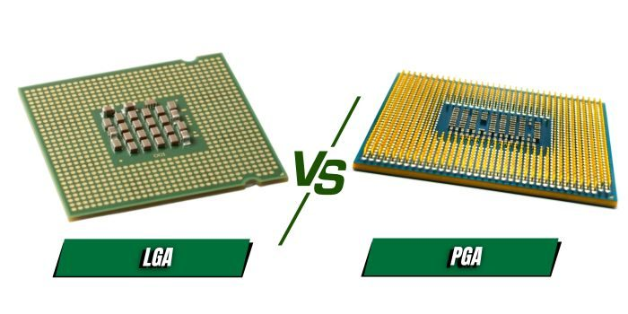
Ejemplos de sockets comunes
Intel
- LGA 1151: para procesadores Intel de sexta, séptima, octava y novena generación.
- LGA 1200: compatible con décima y undécima generación.
- LGA 1700: utilizado por los procesadores de duodécima y decimotercera generación (Alder Lake y Raptor Lake).
- LGA 1851: nuevo estándar que acompañará a los procesadores Intel Core Ultra (serie 15ª generación Meteor Lake y Arrow Lake). Este socket está diseñado para aprovechar mejoras en eficiencia energética, arquitectura híbrida avanzada y compatibilidad con memorias DDR5 de alto rendimiento.
AMD
- AM4: abarca varias generaciones, desde los Ryzen 1000 hasta algunos Ryzen 5000.
- AM5: introducido con los Ryzen 7000 y compatible con memorias DDR5.
- sTRX4/TR4: sockets para procesadores Threadripper de alto rendimiento.
LGA: Land Grid Array (matriz de rejilla de pines)
- Si se observa detenidamente el zócalo de la CPU, se verá una rejilla de pines en la placa base, en lugar de en el procesador, lo que indica claramente que se trata de un zócalo LGA.
- Las CPU de Intel utilizan el zócalo LGA desde sus plataformas heredadas hasta sus plataformas de última generación, lo que demuestra claramente que Intel se inclina por el zócalo LGA: procesadores complejos y de alto rendimiento que requieren un mayor número de pines para que las CPU tengan una mayor eficiencia en términos de transferencia de datos y suministro de energía.
- Instalar una CPU en el zócalo requiere un cuidado especial. Si uno de los pines se daña accidentalmente durante la instalación de la CPU, puede dañar permanentemente la placa base, dejándola inutilizable.
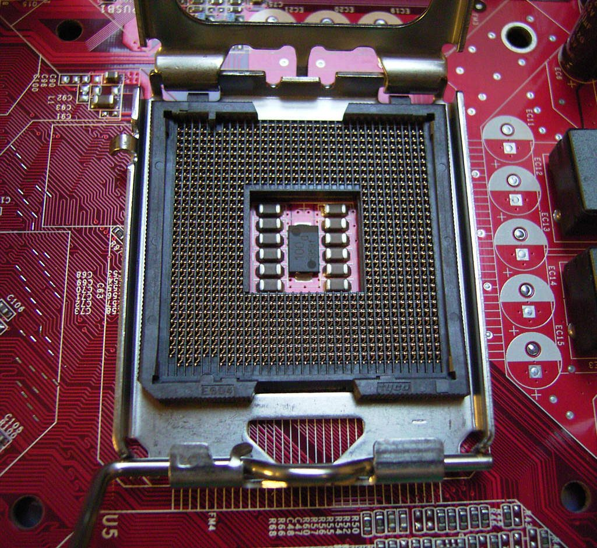
PGA: Pin Grid Array
- En el lado PGA, a diferencia del zócalo LGA, los pines se encuentran en el propio procesador y no en el zócalo de la placa base.
- Instalar un procesador en un zócalo PGA es mucho más intuitivo que en un zócalo LGA, ya que los pines son más visibles, lo que facilita su alineación con los orificios del zócalo y reduce el riesgo de fallos en la conexión.
- AMD es conocida por su amplia gama de CPU asequibles, por lo que el diseño PGA tiene mucho sentido, ya que permite la producción en masa de procesadores a un coste muy razonable.
- Debido a que los pines se encuentran en la CPU, son más susceptibles de sufrir daños, ya que se maneja más la CPU que la placa base. Para evitar que los pines se doblen, hay que tener mucho cuidado al sacarla del embalaje y al fijarla al zócalo.
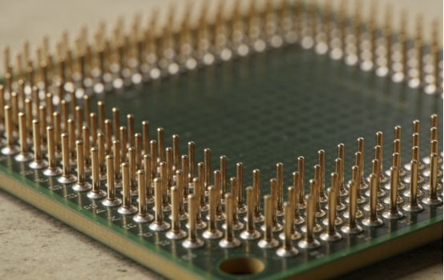
En la actualidad
- Durante años, Intel ha utilizado sistemáticamente el diseño de zócalo LGA, comenzando con el LGA 775 en 2004, y se ha mantenido fiel a este enfoque en diferentes plataformas.
- Aunque AMD ya había utilizado un diseño LGA con sus Threadripper 1950X y 1920X en 2017, destinados al mercado de gama alta, no fue hasta 2022, con el lanzamiento de la serie Ryzen 7000, cuando pasó del zócalo AM4 al AM5 y utilizó LGA 1718, una plataforma diseñada para satisfacer la demanda general de los consumidores de PC.
¿Por qué es importante saber el socket de tu CPU?
Conocer el socket evita múltiples problemas:
- Incompatibilidad física: el procesador no encaja físicamente en la placa.
- BIOS desactualizada: algunas placas pueden tener el socket correcto, pero no reconocer el procesador sin actualizar la BIOS.
- Disipadores incompatibles: algunos sistemas de refrigeración sólo son compatibles con sockets específicos.
- Inversión mal optimizada: usar una placa base de entrada con una CPU de gama alta puede limitar su rendimiento.
Además, si planeas actualizar otros componentes como la memoria RAM o la GPU, el tipo de socket puede condicionar la disponibilidad de slots, el soporte de DDR4 o DDR5 y la conectividad interna.
2. BIOS, CMOS y POST
BIOS (Basic Input Output System)
- La BIOS es el firmware integrado en tu placa base. Cuando enciendes tu PC, es la BIOS la que se ejecuta primero. Su función principal es inicializar y probar los componentes de hardware del sistema antes de cargar un gestor de arranque para tu sistema operativo. La BIOS se asegura de que todos los componentes de tu máquina, como la CPU, la RAM, la GPU y el almacenamiento, sean reconocidos y funcionen correctamente.
- La BIOS es esencial para arrancar el sistema y proporcionar el marco para que el hardware se comunique entre sí. Actúa como intermediario entre el sistema operativo y los componentes de hardware del ordenador. Sin una BIOS que funcione correctamente, el ordenador no podría arrancar ni funcionar con eficacia. No sería más que un conjunto de componentes de hardware que no podrían comunicarse entre sí.
- La BIOS se almacena en un chip ROM.
CMOS
CMOS (Complementary Metal-Oxide-Semiconductor, semiconductor de óxido metálico complementario) es un pequeño trozo de memoria alimentado por pilas que almacena la configuración de la BIOS.
| BIOS | CMOS | Pila CMOS |
|---|---|---|
| Es el firmware (programa) que se ejecuta al encender la computadora. Inicializa el hardware y permite el arranque del sistema operativo. | Es una pequeña memoria (una parte del circuito de la placa base) donde se guarda la configuración del sistema (fecha, hora, orden de arranque, etc.). | Es la batería que alimenta la memoria CMOS para que la configuración no se pierda cuando la computadora está apagada. |
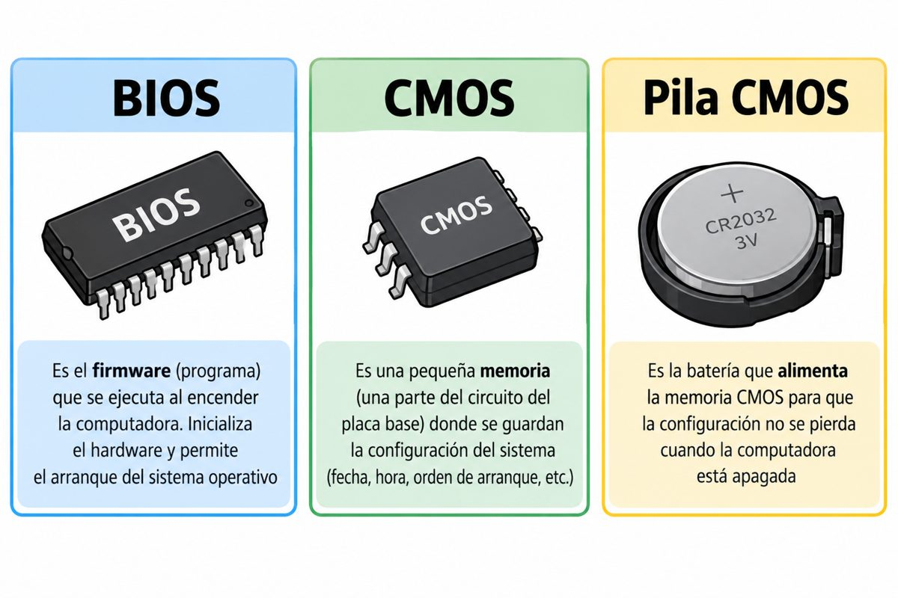
POST (Power On Self Test, autocomprobación de encendido)
Es el programa dentro de la BIOS que realiza el proceso de verificación y testeo de todos los componentes que están conectados a la placa base:
- Microprocesador (CPU): verifica sus registros y estado interno.
- Memoria RAM: analiza y dimensiona los módulos de memoria para asegurar que guardan y recuperan datos sin fallos.
- Tarjeta gráfica (GPU): inicializa el vídeo y comprueba la conexión PCIe.
- Dispositivos de E/S y almacenamiento: detecta el teclado, los discos duros o unidades SSD (SATA o M.2) y los controladores básicos.
- Placa base: revisa el temporizador, el controlador de interrupciones y la integridad del código de la BIOS.
Si todo es correcto, da paso al gestor de arranque del sistema operativo.
Dual BIOS
- Algunos fabricantes incluyen la DualBIOS, que actúa como respaldo de la BIOS principal cuando ésta falla.
- El chip de respaldo intenta reparar el principal restaurándolo a los valores de fábrica.
- Si no lo consigue, asume el papel de BIOS principal.
- Todo el proceso se realiza de manera automática, sin intervención del usuario.
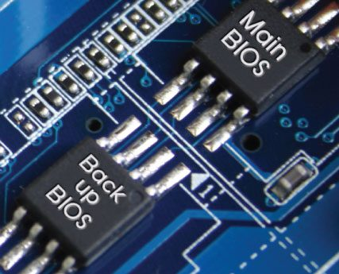
3. XMP y EXPO
XMP (Intel eXtreme Memory Profile)
- Existe un organismo internacional llamado JEDEC que define los estándares de la memoria RAM. Su prioridad no es el rendimiento extremo, sino la máxima compatibilidad y estabilidad.
- Para DDR4, el estándar base común suele ser 2133 MHz (o 2400/2666 MHz según el módulo).
- Para DDR5, la base suele situarse entre 4800 MHz y 5200 MHz.
- Cuando pinchas un módulo en tu placa base por primera vez, la BIOS/UEFI no arriesga: carga el perfil seguro estándar (2133 MHz).
Cualquier velocidad por encima de la base de JEDEC se considera técnicamente overclocking. Cuando el fabricante te vende memorias a 3200 MHz, no significa que sean chips inherentemente distintos que solo funcionen rápido; significa que el fabricante los ha probado en laboratorio y garantiza que:
- Soportan 3200 MHz de forma estable.
- Necesitan un voltaje específico (por ejemplo, subir de 1,2 V a 1,35 V).
- Requieren tiempos de respuesta (timings o latencias como CL16) ajustados para no fallar.
En lugar de obligarte a entrar en la BIOS a modificar manualmente decenas de valores complejos (voltajes, frecuencias y latencias secundarias), el fabricante guarda esa configuración ideal dentro de un chip diminuto en la propia RAM (el chip SPD).
Intel XMP (Extreme Memory Profile) es el botón que lee esa configuración pregrabada. Al entrar en la BIOS y seleccionar XMP Profile 1:
- La placa base lee los parámetros óptimos del fabricante.
- Sube la frecuencia de 2133 MHz a 3200 MHz.
- Ajusta el voltaje y las latencias automáticamente de forma segura.
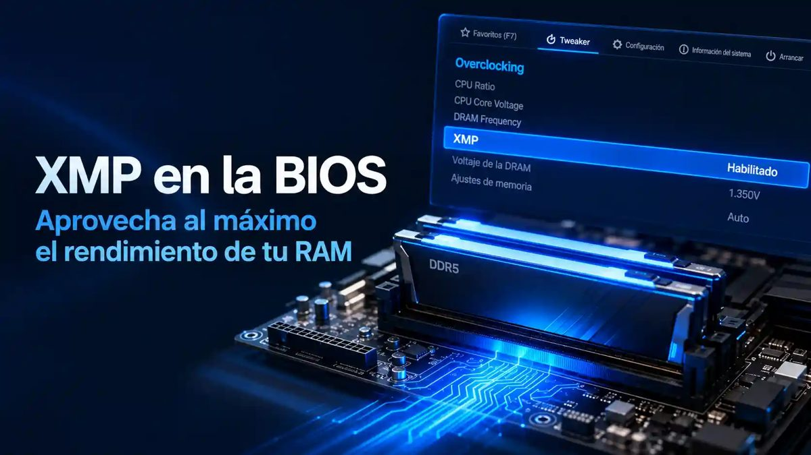
EXPO (AMD Extended Profiles for Overclocking)
En placas base para procesadores AMD, esta misma función suele llamarse DOCP, EXPO o simplemente AXMP.
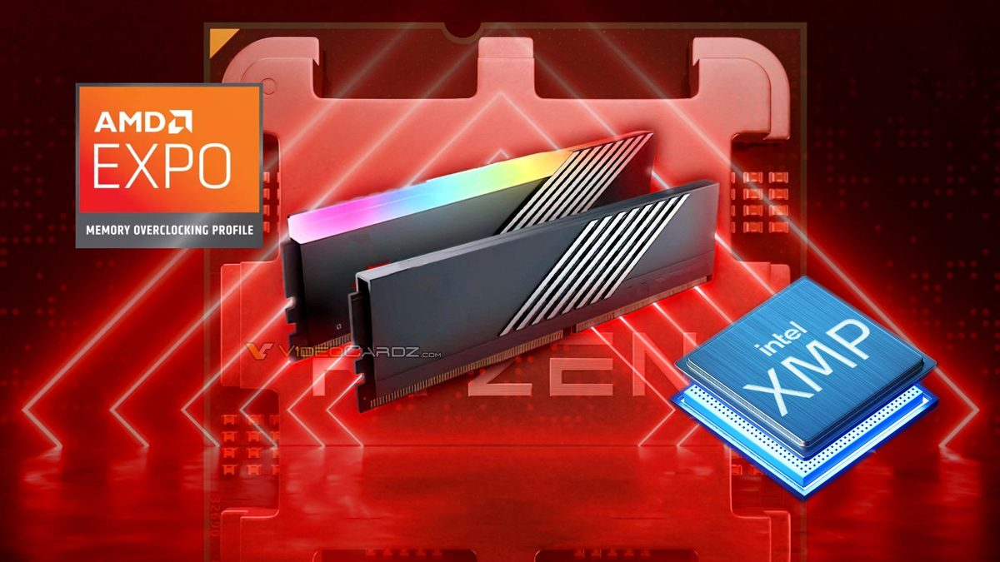
4. Actualizar la BIOS
Guías paso a paso según el fabricante de la placa:
- MSI: cómo actualizar la BIOS de una placa MSI
- ASUS: cómo actualizar la BIOS de una placa ASUS
- GIGABYTE: cómo actualizar la BIOS de una placa GIGABYTE
- Resetear la BIOS: cómo resetear la BIOS de la placa base
Ejemplo: MSI
Para este proceso, necesitarás una unidad flash USB que esté formateada como FAT32.
- Visita el sitio web oficial de MSI y navega hasta la página de producto de tu modelo exacto de placa base; ten en cuenta que a menudo hay modelos de placa base «WiFi» y no Wi-Fi. Desde allí, accede a la página de «Soporte».
- Haz clic en la pestaña «Controladores y descargas». En «BIOS», encontrarás una biblioteca de versiones de BIOS. Descarga la última BIOS disponible para tu placa base, preferiblemente no una que diga «Beta». Si quieres bajar la versión de la BIOS en caso de que surjan problemas, opta por descargar una versión anterior a tu BIOS actual.
- Abre la carpeta zip descargada y extrae el archivo de la BIOS en tu unidad flash USB.
- Con la memoria USB aún insertada, reinicia el sistema y entra en la BIOS pulsando rápidamente la tecla adecuada (normalmente «Supr», «F2» o «F10») en la pantalla del logotipo de MSI.
- Dentro de la configuración de la BIOS, haz clic en «M-Flash». El sistema se reiniciará y entrará en modo M-Flash.
- Selecciona el archivo de la BIOS en la unidad USB y sigue las instrucciones en pantalla para confirmar e iniciar la actualización. Este proceso puede tardar unos minutos. No lo interrumpas bajo ninguna circunstancia, ya que de hacerlo podría bloquear la funcionalidad de la placa base. Una vez finalizada la actualización, el sistema debería reiniciarse automáticamente.
- Puedes volver a entrar en la configuración de la BIOS y comprobar la versión para asegurarte de que se ha actualizado. También sería ideal volver a habilitar X.M.P/A-XMP/E.X.P.O para asegurarte de que estás utilizando al máximo las capacidades de velocidad de tu RAM. Si tenías ajustes personalizados en la BIOS, reconfigúralos según sea necesario.
- Asegúrate de guardar los cambios y salir.
5. Factores de forma
Hay una gran variedad de formas, tamaños y tipos de placas base. El factor de forma de una placa base determina:
- El tamaño y la orientación de la placa con respecto a la caja.
- El tipo de fuente de alimentación necesaria.
- Los periféricos que pueden integrarse en la placa.
Las principales familias son ATX (E-ATX, ATX, Micro-ATX, Mini-ATX), LPX y NLX, BTX (y Micro-BTX) e ITX (Mini-ITX, Nano-ITX, Pico-ITX).
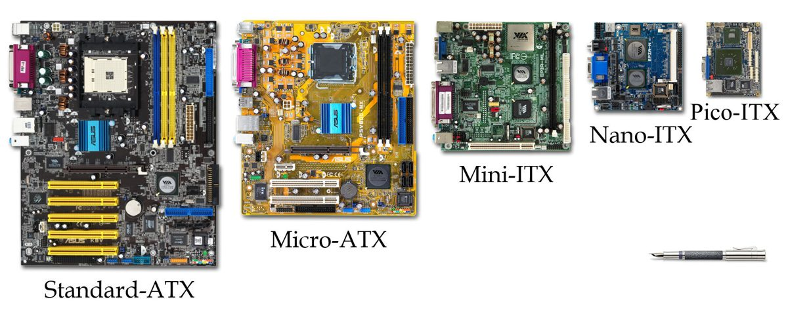
ATX (Advanced Technology eXtended)
Son actualmente las más populares. Introducidas por INTEL en 1995, ofrecen:
- Mejor disposición de los componentes.
- Mejor colocación de CPU y memoria, lejos de las tarjetas de expansión y cerca del ventilador de la fuente de alimentación.
- Los conectores de la fuente de alimentación tienen una sola pieza y un único conector. No se pueden colocar incorrectamente.
Una placa ATX típica tiene:
- Cuatro ranuras RAM.
- Varias ranuras PCI-e.
- Varios puertos SATA y USB.
- Al menos una ranura M.2 SSD.
- Conectores frontales de audio y alimentación.
E-ATX (Extended ATX)
E-ATX, o EATX, es el factor de forma de placa base más grande que encontramos en ordenadores personales. Se trata de una versión extendida de ATX:
- Mayor espacio en la zona de la CPU, para evitar que el disipador de torre choque con las ranuras RAM.
- Hasta 8 slots de memoria RAM, para configuraciones de 128 GB.
- Más ranuras PCI-Express y más slots M.2.
Tenemos algo más de espacio. El problema aquí es estandarizar unas medidas, porque en torno a ellas hay que compatibilizarlas con las cajas de PC, tanto en medidas como en tornillería.
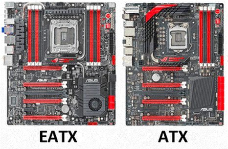
Micro-ATX
La placa MicroATX es una versión compacta de la placa ATX, que reduce su longitud en aproximadamente un 25 %.
Admite los mismos procesadores y tarjetas gráficas que las placas base ATX, así como cuatro ranuras de RAM, pero suele carecer de algunas funciones adicionales:
- La mayoría de las placas MicroATX tienen un máximo de dos ranuras PCI-E x16, con la segunda ranura montada muy cerca de la parte inferior de la placa. Esto dificulta la instalación de tarjetas gráficas duales en la mayoría de las carcasas diseñadas para tarjetas MicroATX.
- También tienen menos ranuras PCI-E x4 y x1, menos puertos USB, SATA y ranuras M.2.
- Solo en términos de conectividad, las placas M-ATX son ligeramente menos versátiles que sus homólogas ATX.
- Las placas base MicroATX también son retrocompatibles, lo que significa que caben en cualquier carcasa que acepte placas base ATX. Si bien esto es una ventaja a la hora de actualizar, no es muy útil cuando se construye un nuevo PC. No tiene mucho sentido montar un PC MicroATX en una carcasa ATX, ya que se pierden muchas de las ventajas de ahorro de espacio de un PC MicroATX, así como muchas de las ventajas de un conjunto de características ATX más grande.
Ventajas
- Los PC MicroATX han reducido considerablemente la distancia que los separa de sus homólogos ATX, lo que convierte a un PC MicroATX en una especie de torre completa más pequeña. Puedes elegir los mismos procesadores, tarjetas gráficas y kits de memoria potentes, pero puedes meterlo todo en un chasis más compacto y ligero.
- Los chasis son más pequeños y ligeros, por lo que ocupan menos espacio en el escritorio o en el suelo y resultan más portátiles cuando se acude a LAN parties o se traslada el PC de una habitación a otra.
- Las cajas MicroATX son, por tanto, ideales para quienes disponen de poco espacio, pero muchos también encuentran más atractiva la apariencia más compacta de un PC MicroATX. No es tan imponente como una caja ATX de tamaño completo y puede permitir que tu PC se mezcle más fácilmente con el resto de tu equipo electrónico o decoración.
- A pesar de esta menor huella física, las cajas MicroATX modernas pueden seguir beneficiándose de una refrigeración de gama alta gracias a ventiladores y disipadores perfectamente diseñados. La gestión de cables es un poco más difícil porque hay menos espacio para ocultarlos, pero con menos espacio abierto, las cajas MicroATX pueden ser mucho más limpias.
- Los PC MicroATX ofrecen la mayoría de las ventajas de los PC ATX modernos, con algunas únicas, pero hay algunas cosas que simplemente no se pueden hacer en un PC más pequeño.
Desventajas
- Los bucles de refrigeración por agua masivos y personalizados son muy difíciles de conseguir en un PC MicroATX. Los bucles inteligentes no son imposibles, pero no podrás instalar varios radiadores de triple ventilador en carcasas MicroATX. Del mismo modo, las cajas MicroATX más pequeñas pueden tener problemas de espacio con los refrigeradores de aire más grandes. Como resultado, el potencial de refrigeración de los PC MicroATX es menor. En un PC MicroATX se pueden seguir utilizando las CPU y GPU más potentes, pero no se podrán refrigerar tan bien. Si tienes planes específicos de componentes y refrigeración para tu nuevo PC, asegúrate de que un PC MicroATX puede acomodarlos antes de comprometerte con este formato.
- Esta falta de espacio extra también significa que tendrás menos opciones para tarjetas de expansión y discos duros. Con menos puertos PCI-Express y SATA, hay menos opciones para conectar GPU, discos duros y SSD M.2, así como menos espacio para integrarlos en el sistema.
- Dado que la plataforma MicroATX es menos popular que la ATX, también hay menos opciones en cuanto a carcasas y placas base.
LPX (Low Profile Extension)
- La principal diferencia entre estas placas y las anteriores es que los puertos de entrada y salida están presentes en la parte posterior del sistema.
- Este concepto demostró ser beneficioso y también fue adoptado por los modelos AT en sus versiones más nuevas.
- El uso de una tarjeta vertical también se hizo para la colocación de algunas ranuras más. Pero estas tarjetas de expansión también plantearon el problema de que el flujo de aire no era adecuado. Además, algunas placas LPX de baja calidad ni siquiera tenían una ranura AGP real y simplemente se conectaban al bus PCI. Todos estos aspectos desfavorables llevaron a la extinción de este sistema de placa base, que fue sucedido por el NLX.
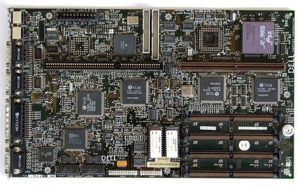
NLX
- Factor de forma de perfil bajo diseñado para sustituir al LPX. Fue muy popular en entornos de oficina.
- Es muy similar al LPX, pero con algunas mejoras.
- Como principal novedad, permitía cambiar la fuente de alimentación o cualquier unidad de disco sin tener que mover el resto de tarjetas del sistema.
- Para mantener un perfil bajo, disponía de una «tarjeta elevadora» que permitía instalar tarjetas de forma PARALELA a la placa base.
BTX (Balanced Technology Extended)
- Lo introdujo INTEL a finales de 2004, buscando solventar problemas de refrigeración de algunos procesadores.
- Tuvo muy poca aceptación por parte de los usuarios.
- Cambiaba completamente la distribución de los componentes de la placa base.
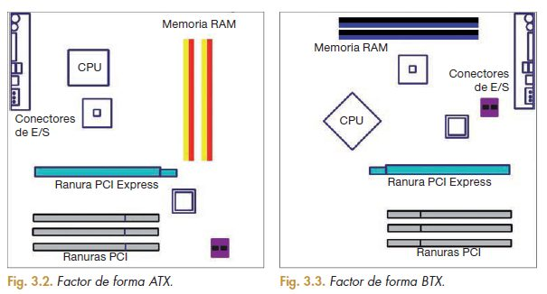
ITX: Mini-ITX, Nano-ITX y Pico-ITX
- Son las placas más pequeñas que existen actualmente.
- Todas son compatibles con el estándar ATX. Permiten la conexión de componentes diseñados para cualquier otro PC ATX.
- Su refrigeración suele ser mediante disipadores pasivos.
- Evidentemente, este formato tan compacto está mucho más limitado en cuanto a posibilidades de componentes.
- El precio de estas placas base es generalmente igual o superior al de una placa base ATX con más características, porque su pequeño tamaño hace que su diseño sea más complejo de producir.
- También se prefieren generalmente cuando se trata de overclocking de memoria, debido a su menor longitud de pista.
- Las placas Mini-ITX también se pueden enfriar fácilmente debido a su arquitectura de bajo consumo de energía. Dicha arquitectura las hace ampliamente útiles para sistemas de PC de cine en casa o sistemas donde el ruido puede disminuir la calidad o el valor de la experiencia cinematográfica. Los cuatro orificios de montaje de una placa Mini-ITX se alinean con los cuatro orificios de las placas base de especificación ATX, y las ubicaciones de la placa posterior y la ranura de expansión son las mismas.
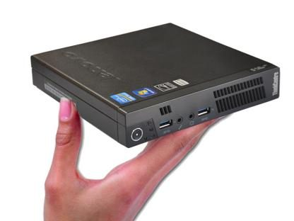
Comparativa de tamaños
| Nombre | Tamaño (mm) |
|---|---|
| E-ATX | 305 × 330 |
| ATX | 305 × 244 |
| Micro-ATX | 244 × 244 |
| Mini-ITX | 170 × 170 |
| Nano-ITX | 120 × 120 |
| Pico-ITX | 100 × 72 |
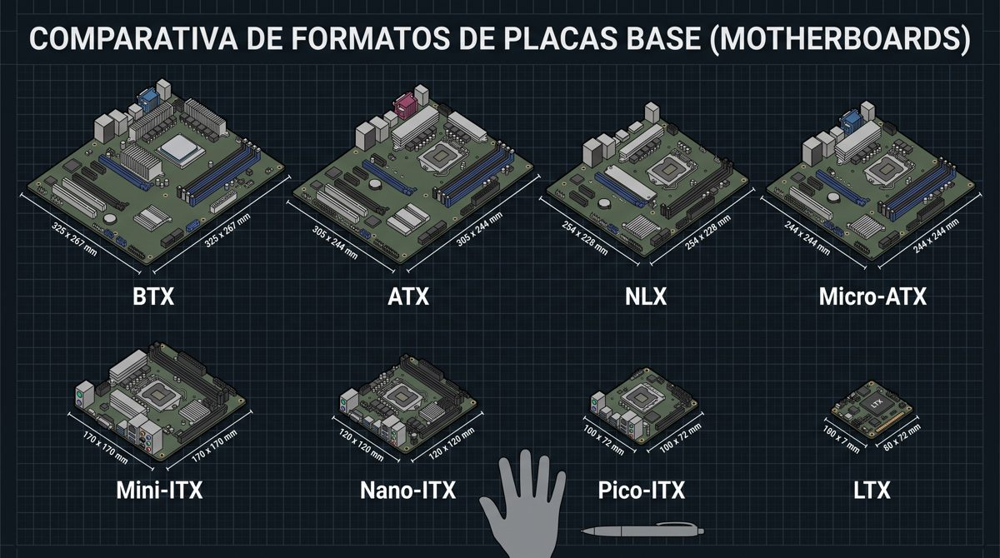
- ¿Puedo colocar una placa base Mini-ITX en una caja con factor Pico-ITX?
- ¿Y en una caja con factor ATX?
6. Separadores (standoffs)
Los separadores son unas de las piezas más pequeñas pero más críticas al montar un ordenador. Tienen una doble función vital:
- Elevar la placa base para que no toque el metal de la caja (evitando un cortocircuito que podría quemar tus componentes).
- Asegurar la placa firmemente en su lugar.
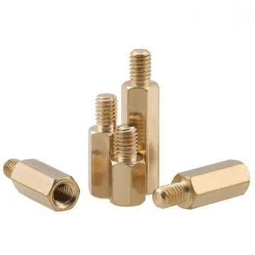
Cada factor de forma (E-ATX, ATX, Micro-ATX, Mini-ITX…) usa una distribución distinta de separadores.
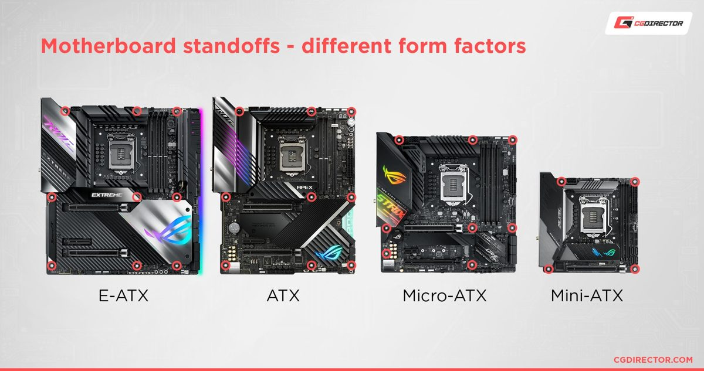
Tres tipos
- Separadores de rosca (tradicionales): son pequeños postes metálicos (normalmente de latón dorado o negros). Tienen una rosca macho en la parte inferior (que se atornilla a la caja) y un agujero con rosca hembra en la parte superior (donde se introduce el tornillo que sujeta la placa base).
- Separadores integrados (pretroquelados): muchas cajas modernas ya no usan postes sueltos. En su lugar, la propia bandeja de metal de la caja viene con unas protuberancias o «bultos» elevados con el agujero para el tornillo.
- El poste de centrado: muchas cajas incluyen un separador especial en el centro que no tiene rosca, sino un pivote de plástico o metal liso. Sirve para encajar la placa base a la primera y mantenerla alineada mientras pones el resto de los tornillos.
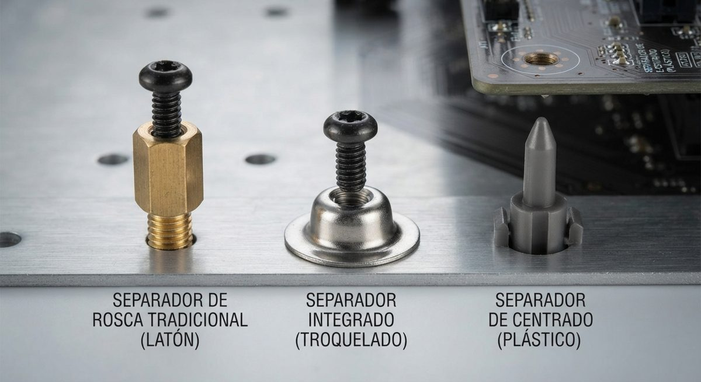
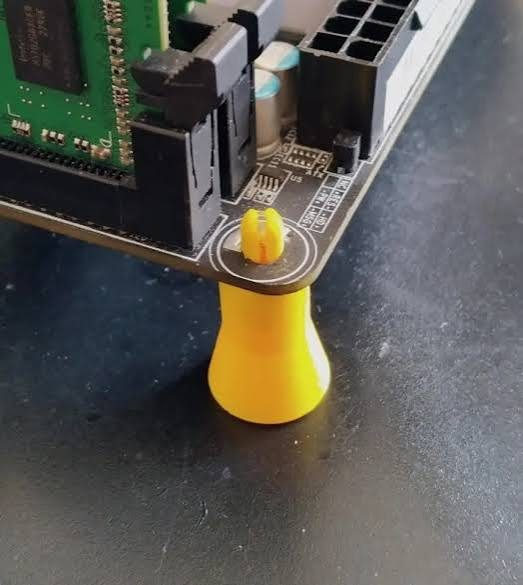
Colocación
- Presenta la placa: pon la placa base dentro de la caja con cuidado (sin atornillar) y mira a través de sus agujeros para ver cuáles coinciden con los de la bandeja.
- Quita los que sobren: si la caja traía separadores preinstalados en posiciones que tu placa no usa, desatorníllalos obligatoriamente.
- Pon los que falten: enrosca los separadores en los agujeros que sí coincidan con tu placa. Puedes apretarlos firmemente con los dedos o usar una pequeña herramienta hexagonal (a veces incluida con la caja) adaptada a un destornillador de estrella.
- Atornilla la placa: coloca la placa sobre los separadores y usa los tornillos correctos (suelen ser de rosca fina, tipo M3). Apriétalos en cruz para repartir la presión de forma uniforme, sin hacer fuerza excesiva.
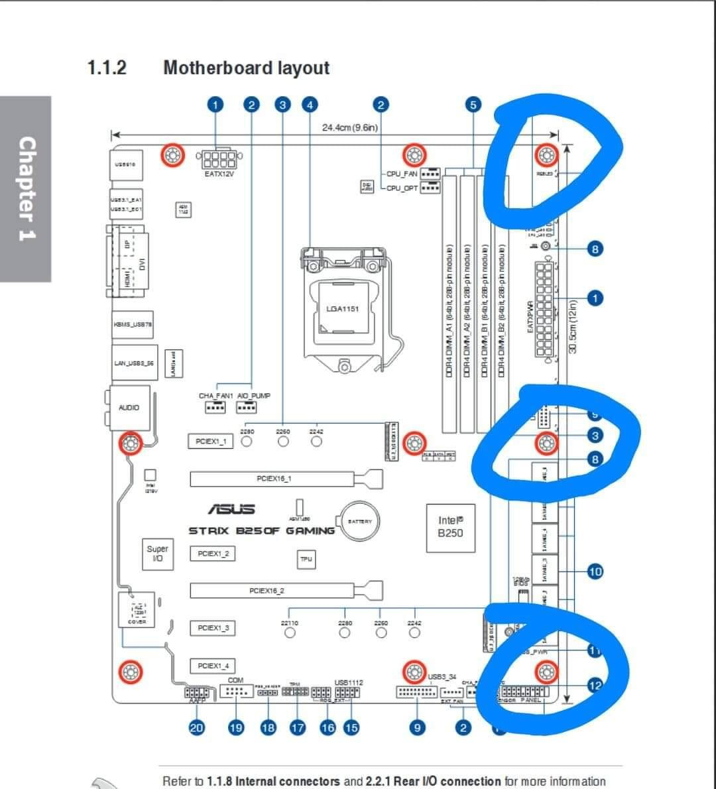
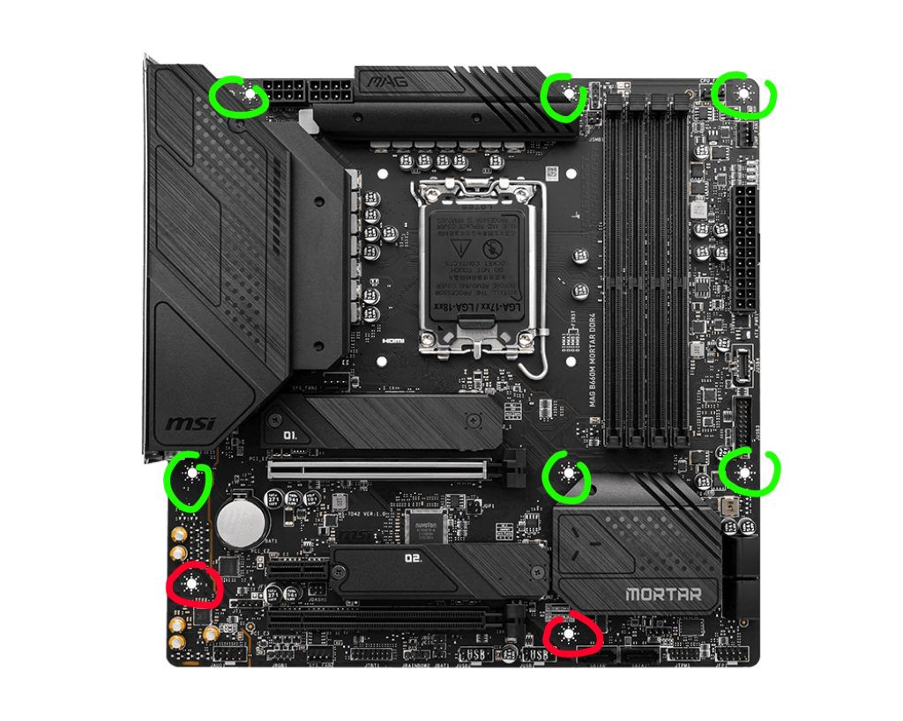
Errores comunes
El error más común al montar un PC por primera vez es dejar un separador puesto en un lugar donde la placa base no tiene un agujero.
Si el poste de metal hace contacto directo con las pistas de circuito o las soldaduras de la parte trasera de la placa base, al encender la fuente de alimentación ocurrirá un cortocircuito. Esto puede provocar:
- Que el ordenador no encienda (la fuente activa su sistema de protección).
- Daños permanentes y destructivos en la placa base o el procesador.
7. Señales de aviso (pitidos)
AMIBIOS
AMIBIOS es un fabricante de BIOS al que recurren muchas grandes empresas de todo el mundo (Apple, Asus, Acer, Dell, Huawei o Microsoft, entre muchas otras).
| Sonido | Posible causa |
|---|---|
| Pitidos continuos | Fallo en el suministro eléctrico. |
| 1 pitido corto | Fallo en la actualización de DRAM. |
| 2 pitidos cortos | Error de paridad en la memoria base, normalmente en los primeros 64 KB de la RAM. |
| 3 pitidos cortos | Fallo de escritura o lectura en los primeros 64 KB de la RAM. |
| 4 pitidos cortos | Fallo en el temporizador de la placa base. También puede ser un problema con el módulo RAM del primer slot. |
| 5 pitidos cortos | Fallo en el procesador. Puede deberse a una tarjeta de expansión dañada, la CPU o la placa base. |
| 6 pitidos cortos | Suele estar relacionado con el teclado. También puede deberse a una tarjeta de expansión. |
| 7 pitidos cortos | Fallo de excepción del modo virtual. Problema de la tarjeta de expansión, del hardware de la placa base o una CPU dañada. |
| 8 pitidos cortos | Error con la memoria de la pantalla, causado casi siempre por fallos en la tarjeta de vídeo. |
| 9 pitidos cortos | Error de suma de verificación de ROM AMIBIOS. Problema con el chip de la BIOS. |
| 10 pitidos cortos | Error de lectura/escritura del registro de apagado CMOS. Fallo de hardware en el chip de la BIOS. |
| 11 pitidos cortos | Error de la memoria caché, que puede deberse a varios tipos de hardware que están fallando. |
| 1 pitido largo y 2 cortos | Error con la memoria que forma parte de la tarjeta de vídeo. |
| 1 pitido largo y 3 cortos | Fallo en la memoria RAM, concretamente en los primeros 64 KB de memoria. |
| 1 pitido largo y 8 cortos | Fallo en el test del adaptador de vídeo, quizá por falta de energía en la tarjeta de vídeo. |
| Sirena de dos tonos | Problema con el nivel del voltaje o con unos ventiladores de CPU que van demasiado lentos. |
BIOS de Award y Phoenix
| Sonido | Posible causa |
|---|---|
| Pitidos continuos | No se encuentra o no se reconoce tu memoria RAM o la tarjeta gráfica. |
| 1 pitido corto | Se ha iniciado el ordenador sin encontrar errores en su diagnóstico inicial. |
| 2 pitidos cortos | Error que no está especificado por el pitido. La información sobre lo que falla se muestra en pantalla. |
| Pitidos cortos repetidos | Fallo en la alimentación del sistema. |
| 1 pitido largo | Error en la memoria RAM. |
| 1 pitido largo y 1 corto | Error en el funcionamiento de la placa base o de la memoria DRAM. |
| 1 pitido largo y 2 cortos | Error en la tarjeta gráfica, la tarjeta de vídeo o el monitor. |
| 1 pitido largo y 3 cortos | Error en el teclado o su controlador, aunque en versiones posteriores puede ser también un error por una gráfica no detectada. |
| 3 pitidos largos | Error de conexión entre la placa base y el teclado. |
| 1 pitido largo y 9 cortos | Error en la BIOS. |
| Pitidos de tonos fuertes y bajos | Un error en el procesador, posiblemente por sobrecalentamiento. |
8. Glosario
| Español | Inglés | Abreviatura |
|---|---|---|
| Placa base | Motherboard | MB |
| Factor de forma | Form Factor | |
| Fuente de alimentación | Power Supply | P.S. |
| Zócalo | Socket | |
| Tarjeta de expansión | Expansion Card | |
| Disco duro | Hard Disk Drive | HDD |
| Memoria de acceso aleatorio | Random Access Memory | RAM |
| Memoria de solo lectura | Read Only Memory | ROM |